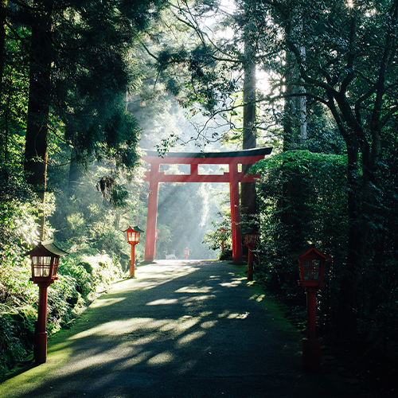
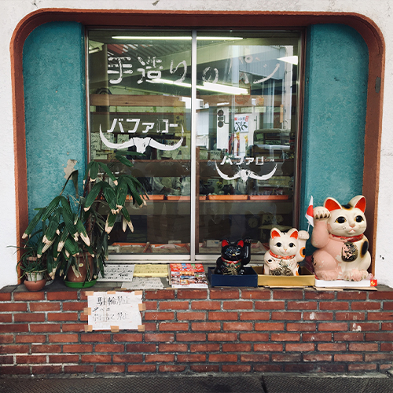

Japón es un país que lo tiene todo y más: santuariaos sintoístas, magníficos templos budistas, antiguas rutas de comercio, espectaculares jardines diseñados al milímetro, eclécticas cafeterías de mascotas, estilos artísticos diversos, iconos culturales que se han mantenido a lo largo del tiempo un montón de delicidas gastronómicas.
Japón es, en definitiva, un país con un sinfín de lugares y cosas por descubrir. Podrías pasarte la vida visitando este país y todavía te quedaría un extraordinario rincón por explorar Sin embargo, este amplio abanico de opciones trae consigo un pequeño inconveniente… Y es que con tantas alternativas y cosas que ver, hacer y vivir en Japón, ¡no es nada fácil escoger a donde ir! Y si además tenemos en cuenta que la información en lengua extranjera es bastante escasa, solo un verdadero experto sería capaz de guiarte por los mejores lugares que visitar en Japón. ¡Pero para eso nos tienes a nosotros! ¡Para servirte de guía y darte unas cuantas pistas sobre qué ver en Japón y vivir como un japonés más!
Destinos |
|
|---|---|
|
Hakone  |
Monte Fuji |
|
Nagoya  |
Osaka |